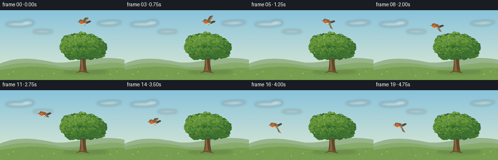
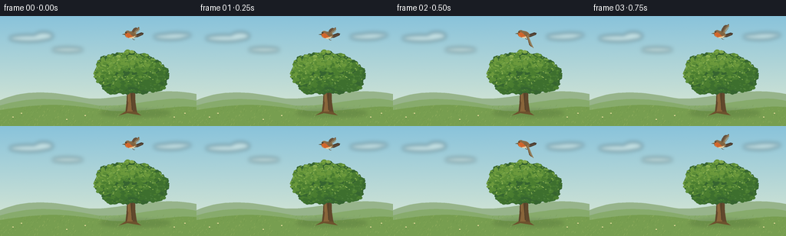

CODING AGENTS AS PIXEL WORLD MODELS
traex/GPT-6.1-Sol · dynamic_spatial_relationship_0044
点击播放 · 原生 RGB 像素
逐轮保存的候选
回放视频、检查图与代码变化。
每份候选均可单独播放。实际图片检查记录在下方工具轨迹中。
候选 01播放与检查图
点击播放 · 原生 RGB 像素


展开代码变化
--- 上一保存版本
+++ 本次保存版本
@@ -0,0 +1,160 @@
+from pathlib import Path
+import math
+import numpy as np
+from PIL import Image, ImageDraw, ImageFilter
+import artifact_io
+
+ROOT = Path(__file__).resolve().parent
+W, H, S = 256, 144, 4
+rng = np.random.default_rng(32)
+
+def poly(draw, pts, fill):
+ draw.polygon([(round(x*S), round(y*S)) for x,y in pts], fill=fill)
+
+def ellipse(draw, box, fill):
+ draw.ellipse(tuple(round(v*S) for v in box), fill=fill)
+
+def line(draw, pts, fill, width=1):
+ draw.line([(round(x*S),round(y*S)) for x,y in pts], fill=fill, width=max(1,round(width*S)), joint='curve')
+
+def curve(p, steps=22):
+ # Cubic Bezier outline: start, then triples of control points.
+ out=[p[0]]
+ a=np.array(p[0],float)
+ for j in range(1,len(p),3):
+ b,c,e=[np.array(v,float) for v in p[j:j+3]]
+ for t in np.linspace(0,1,steps)[1:]:
+ q=(1-t)**3*a+3*(1-t)**2*t*b+3*(1-t)*t*t*c+t**3*e
+ out.append(tuple(q))
+ a=e
+ return out
+
+# An airy, subtly textured summer landscape.
+y,x=np.mgrid[0:H*S,0:W*S]
+u=y/(H*S)
+noise=rng.normal(0,0.45,(H*S,W*S,1))
+top=np.array([137,195,219]); bottom=np.array([225,235,211])
+arr=top[None,None,:]*(1-u[:,:,None])+bottom[None,None,:]*u[:,:,None]+noise
+background=Image.fromarray(np.uint8(np.clip(arr,0,255)))
+clouds=Image.new('RGBA',background.size)
+d=ImageDraw.Draw(clouds)
+for cx,cy,rx,ry in [(37,29,25,4.2),(57,26,12,5),(88,44,20,3),(231,25,18,3),(221,27,21,3.7)]:
+ ellipse(d,(cx-rx,cy-ry,cx+rx,cy+ry),(255,255,242,110))
+clouds=clouds.filter(ImageFilter.GaussianBlur(2.8*S))
+background=Image.alpha_composite(background.convert('RGBA'),clouds).convert('RGB')
+d=ImageDraw.Draw(background)
+poly(d,curve([(0,110),(38,94),(72,100),(110,107),(146,113),(199,90),(256,102)])+[(256,144),(0,144)],(151,180,139))
+poly(d,curve([(0,117),(50,102),(90,110),(128,117),(172,120),(220,101),(256,111)])+[(256,144),(0,144)],(135,171,108))
+poly(d,curve([(0,123),(67,112),(92,116),(145,124),(188,127),(222,116),(256,119)])+[(256,144),(0,144)],(119,158,80))
+# Ground, in soft bands of warm sunlight.
+for i in range(530):
+ gx=float(rng.uniform(0,W)); gy=float(rng.uniform(118,144))
+ a=float(rng.uniform(.4,2.4)); c=[(147,175,91),(171,191,109),(105,144,67),(132,166,81)][i%4]
+ line(d,[(gx,gy),(gx+.6*a,gy-a)],c,.24)
+shadow=Image.new('RGBA',background.size)
+sd=ImageDraw.Draw(shadow)
+ellipse(sd,(130,122,222,132),(47,75,36,48))
+shadow=shadow.filter(ImageFilter.GaussianBlur(2.4*S))
+background=Image.alpha_composite(background.convert('RGBA'),shadow).convert('RGB')
+
+# Trunk and branches are painted underneath the leafy crown.
+d=ImageDraw.Draw(background)
+trunk=curve([(163,127),(166,110),(165,98),(165,90),(164,80),(158,76),(155,68),(160,70),(169,83),(171,88),(173,77),(181,70),(190,65),(188,75),(179,83),(177,91),(175,104),(176,116),(179,128),(172,126),(169,126),(163,127)])
+poly(d,trunk,(97,72,44))
+poly(d,curve([(165,126),(169,112),(166,99),(168,91),(169,99),(171,115),(173,127),(170,126),(167,126),(165,126)]),(137,101,58))
+poly(d,[(163,125),(155,130),(166,127),(172,128),(184,130),(177,125)],(109,82,45))
+line(d,[(172,123),(171,108),(172,99)],(73,60,38),.65)
+line(d,[(167,112),(167,100),(165,91),(158,84)],(165,124,71),.55)
+line(d,[(174,95),(183,83),(195,78)],(100,77,42),2)
+line(d,[(168,92),(157,85),(144,79)],(99,76,43),2.4)
+line(d,[(170,82),(169,67)],(115,87,46),2)
+
+# Build a consistent, richly layered tree canopy. Irregular overlapping lobes
+# preserve an oak silhouette, with little leaf pairs catching upper-left light.
+foliage=Image.new('RGBA',background.size)
+fd=ImageDraw.Draw(foliage)
+clusters=[(145,81,17,15),(133,76,10,13),(140,65,14,14),(153,61,14,13),(168,59,15,14),(184,62,16,13),(197,69,15,14),(207,77,13,14),(200,86,17,13),(184,89,19,13),(164,90,18,12),(150,90,17,12),(166,73,25,20),(189,77,22,20)]
+for cx,cy,rx,ry in clusters:
+ edge=[]
+ for a in np.linspace(0,2*math.pi,110):
+ r=1+.055*math.sin(9*a+cx)+.033*math.sin(17*a+cy)
+ edge.append((cx+rx*r*math.cos(a),cy+ry*r*math.sin(a)))
+ poly(fd,edge,(54,100,48,255))
+# Dense leaf groups, darker near the bottom and luminous on the top left.
+for n in range(920):
+ cx,cy,rx,ry=clusters[int(rng.integers(len(clusters)))]
+ theta=rng.uniform(0,2*math.pi); rad=np.sqrt(rng.uniform(0,.95))
+ lx=cx+rx*rad*math.cos(theta); ly=cy+ry*rad*math.sin(theta)
+ light=np.clip((93-ly)/42 + (183-lx)/150,0,1)
+ cols=[(61,111,46),(74,125,48),(90,140,54),(107,153,60),(129,168,74)]
+ k=int(np.clip(light*3+rng.uniform(-.7,1.2),0,4))
+ size=rng.uniform(1.2,3.4)
+ ellipse(fd,(lx-size,ly-size*.67,lx+size,ly+size*.67),cols[k]+(255,))
+ if n%3==0:
+ ellipse(fd,(lx-size*.65,ly-size*.65,lx+size*.2,ly-size*.1),tuple(min(v+12,255) for v in cols[k])+(255,))
+# Tiny bright leaves on the exposed crown.
+for n in range(105):
+ cx,cy,rx,ry=clusters[int(rng.integers(len(clusters)))]
+ a=rng.uniform(math.pi,2*math.pi)
+ lx=cx+rx*.93*math.cos(a);ly=cy+ry*.9*math.sin(a)
+ ellipse(fd,(lx-.75,ly-.38,lx+.8,ly+.38),(146,182,86,255))
+background=Image.alpha_composite(background.convert('RGBA'),foliage).convert('RGB')
+# A few delicate meadow flowers, far from the flight path.
+d=ImageDraw.Draw(background)
+for gx,gy in [(17,133),(28,128),(87,136),(111,131),(227,133),(241,128)]:
+ line(d,[(gx,gy+2),(gx-.4,gy-1)],(77,122,55),.35)
+ ellipse(d,(gx-1,gy-1.4,gx+.7,gy-.2),(232,220,157))
+
+
+def bird(im,bx,by,t):
+ # A left-facing robin: orange throat, cream belly, russet wings and tail.
+ dr=ImageDraw.Draw(im)
+ flap=math.sin(2*math.pi*1.42*t+.45)
+ angle=math.radians(4*math.sin(t*1.1)-3)
+ def tf(points):
+ return [(bx+px*math.cos(angle)-py*math.sin(angle),by+px*math.sin(angle)+py*math.cos(angle)) for px,py in points]
+ def shape(points,col): poly(dr,tf(points),col)
+ def path(points,col): shape(curve(points),col)
+ def stroke(points,col,width): line(dr,tf(points),col,width)
+ # Far wing, visibly separate from the near wing.
+ extent=3+11*abs(flap)
+ sign=-1 if flap>0 else 1
+ path([(0,-2),(1,-5),(4,sign*extent-3),(9,sign*extent),(9,sign*extent+2),(5,sign*extent*.55),(3,2),(0,1),(0,0),(0,-2)],(102,82,62))
+ # Tapered tail feathers follow the direction of flight.
+ shape([(4,1),(13,-2),(16,-1),(15,1.2),(8,4),(4,4)],(73,60,49))
+ stroke([(7,2),(14,-.1)],(153,124,84),.5)
+ stroke([(7,3),(14,1)],(116,93,66),.4)
+ # Main body and head form one organic silhouette.
+ path([(-8,-1),(-9,-5),(-4,-6.3),(-2,-4.2),(1,-4.2),(6,-2.8),(7,1.4),(7,5),(0,6),(-4,4),(-7,3),(-9,2),(-8,-1)],(136,106,70))
+ path([(-8,-1),(-7,-2.5),(-4,-3),(-2,-1),(-.5,.5),(1,1.7),(3,3.7),(1,5.8),(-4,4.8),(-7,2.8),(-8,1),(-8,0),(-8,-1)],(208,102,45))
+ path([(-3,4),(-1,3.8),(3,3),(5,2.1),(5,4.3),(1,6),(-2,5.1),(-3,4.7),(-3,4.4),(-3,4)],(228,209,166))
+ # Small pointed bill, glossy dark eye and warm cheek highlight.
+ shape([(-8.2,-2),(-12,-.7),(-8,0)],(55,52,43))
+ shape([(-8.1,-2),(-11,-1),(-8.2,-1)],(174,149,88))
+ pts=tf([(-6.7,-2.8)])[0]
+ ellipse(dr,(pts[0]-.84,pts[1]-.84,pts[0]+.84,pts[1]+.84),(30,29,24))
+ ellipse(dr,(pts[0]-.25,pts[1]-.45,pts[0]+.12,pts[1]-.08),(255,249,213))
+ stroke([(-7,1.1),(-5.8,2.6),(-4.8,2.9)],(236,145,60),.45)
+ # Near wing feathers expand into a fan on each wingbeat.
+ tipy=sign*(4+12*abs(flap))
+ path([(0,-2),(3,-3),(7,tipy*.75),(10,tipy),(12,tipy+.9),(10,tipy+3),(6,tipy*.7+3),(4,2.5),(1,2.5),(0,-2)],(102,78,53))
+ for k in range(4):
+ stroke([(2+k*.7,-1+k*.4),(7+k*.95,tipy*.77+1+k*.52),(10+k*.45,tipy+1+k*.55)],(166-k*9,137-k*8,93-k*6),.55)
+ path([(0,-2),(2,-3),(4,-2),(5,0),(4,2),(2,2.5),(0,1),(0,0),(0,-1),(0,-2)],(130,101,65))
+ # Tucked legs, short and unobtrusive in flight.
+ stroke([(1,5.2),(2.5,6.8),(4.2,6.9)],(92,67,43),.45)
+
+frames=[]
+for i in range(20):
+ t=i/4
+ # Hold over the crown briefly, then travel left and down into clear sky.
+ q=np.clip((t-.65)/3.35,0,1)
+ ease=q*q*(3-2*q)
+ bx=171-119*ease
+ by=24+48*ease-9*math.sin(math.pi*q)+.55*math.sin(t*2*math.pi*1.42)
+ frame=background.copy()
+ bird(frame,bx,by,t)
+ frame=frame.resize((W,H),Image.Resampling.LANCZOS)
+ frames.append(np.asarray(frame,dtype=np.uint8))
+artifact_io.save(np.stack(frames),ROOT)
+print('Saved 20 RGB frames, 256 x 144 at 4 fps.')
可观测工具轨迹
实际执行的命令与返回图片。
命令 1exit 0
/bin/bash -lc 'ls -la && cat prompt.txt && cat GENERATION_RULES.md && cat task_spec.json'
命令 2exit 0
/bin/bash -lc 'cat artifact_io.py'
命令 3exit 0
/bin/bash -lc "cat > generate.py <<'PY'
from pathlib import Path
import math
import numpy as np
from PIL import Image, ImageDraw, ImageFilter
import artifact_io
ROOT = Path(__file__).resolve().parent
W, H, S = 256, 144, 4
rng = np.random.default_rng(32)
def poly(draw, pts, fill):
draw.polygon([(round(x*S), round(y*S)) for x,y in pts], fill=fill)
def ellipse(draw, box, fill):
draw.ellipse(tuple(round(v*S) for v in box), fill=fill)
def line(draw, pts, fill, width=1):
draw.line([(round(x*S),round(y*S)) for x,y in pts], fill=fill, width=max(1,round(width*S)), joint='curve')
def curve(p, steps=22):
# Cubic Bezier outline: start, then triples of control points.
out=[p[0]]
a=np.array(p[0],float)
for j in range(1,len(p),3):
b,c,e=[np.array(v,float) for v in p[j:j+3]]
for t in np.linspace(0,1,steps)[1:]:
q=(1-t)**3*a+3*(1-t)**2*t*b+3*(1-t)*t*t*c+t**3*e
out.append(tuple(q))
a=e
return out
# An airy, subtly textured summer landscape.
y,x=np.mgrid[0:H*S,0:W*S]
u=y/(H*S)
noise=rng.normal(0,0.45,(H*S,W*S,1))
top=np.array([137,195,219]); bottom=np.array([225,235,211])
arr=top[None,None,:]*(1-u[:,:,None])+bottom[None,None,:]*u[:,:,None]+noise
background=Image.fromarray(np.uint8(np.clip(arr,0,255)))
clouds=Image.new('RGBA',background.size)
d=ImageDraw.Draw(clouds)
for cx,cy,rx,ry in [(37,29,25,4.2),(57,26,12,5),(88,44,20,3),(231,25,18,3),(221,27,21,3.7)]:
ellipse(d,(cx-rx,cy-ry,cx+rx,cy+ry),(255,255,242,110))
clouds=clouds.filter(ImageFilter.GaussianBlur(2.8*S))
background=Image.alpha_composite(background.convert('RGBA'),clouds).convert('RGB')
d=ImageDraw.Draw(background)
poly(d,curve([(0,110),(38,94),(72,100),(110,107),(146,113),(199,90),(256,102)])+[(256,144),(0,144)],(151,180,139))
poly(d,curve([(0,117),(50,102),(90,110),(128,117),(172,120),(220,101),(256,111)])+[(256,144),(0,144)],(135,171,108))
poly(d,curve([(0,123),(67,112),(92,116),(145,124),(188,127),(222,116),(256,119)])+[(256,144),(0,144)],(119,158,80))
# Ground, in soft bands of warm sunlight.
for i in range(530):
gx=float(rng.uniform(0,W)); gy=float(rng.uniform(118,144))
a=float(rng.uniform(.4,2.4)); c=[(147,175,91),(171,191,109),(105,144,67),(132,166,81)][i%4]
line(d,[(gx,gy),(gx+.6*a,gy-a)],c,.24)
shadow=Image.new('RGBA',background.size)
sd=ImageDraw.Draw(shadow)
ellipse(sd,(130,122,222,132),(47,75,36,48))
shadow=shadow.filter(ImageFilter.GaussianBlur(2.4*S))
background=Image.alpha_composite(background.convert('RGBA'),shadow).convert('RGB')
# Trunk and branches are painted underneath the leafy crown.
d=ImageDraw.Draw(background)
trunk=curve([(163,127),(166,110),(165,98),(165,90),(164,80),(158,76),(155,68),(160,70),(169,83),(171,88),(173,77),(181,70),(190,65),(188,75),(179,83),(177,91),(175,104),(176,116),(179,128),(172,126),(169,126),(163,127)])
poly(d,trunk,(97,72,44))
poly(d,curve([(165,126),(169,112),(166,99),(168,91),(169,99),(171,115),(173,127),(170,126),(167,126),(165,126)]),(137,101,58))
poly(d,[(163,125),(155,130),(166,127),(172,128),(184,130),(177,125)],(109,82,45))
line(d,[(172,123),(171,108),(172,99)],(73,60,38),.65)
line(d,[(167,112),(167,100),(165,91),(158,84)],(165,124,71),.55)
line(d,[(174,95),(183,83),(195,78)],(100,77,42),2)
line(d,[(168,92),(157,85),(144,79)],(99,76,43),2.4)
line(d,[(170,82),(169,67)],(115,87,46),2)
# Build a consistent, richly layered tree canopy. Irregular overlapping lobes
# preserve an oak silhouette, with little leaf pairs catching upper-left light.
foliage=Image.new('RGBA',background.size)
fd=ImageDraw.Draw(foliage)
clusters=[(145,81,17,15),(133,76,10,13),(140,65,14,14),(153,61,14,13),(168,59,15,14),(184,62,16,13),(197,69,15,14),(207,77,13,14),(200,86,17,13),(184,89,19,13),(164,90,18,12),(150,90,17,12),(166,73,25,20),(189,77,22,20)]
for cx,cy,rx,ry in clusters:
edge=[]
for a in np.linspace(0,2*math.pi,110):
r=1+.055*math.sin(9*a+cx)+.033*math.sin(17*a+cy)
edge.append((cx+rx*r*math.cos(a),cy+ry*r*math.sin(a)))
poly(fd,edge,(54,100,48,255))
# Dense leaf groups, darker near the bottom and luminous on the top left.
for n in range(920):
cx,cy,rx,ry=clusters[int(rng.integers(len(clusters)))]
theta=rng.uniform(0,2*math.pi); rad=np.sqrt(rng.uniform(0,.95))
lx=cx+rx*rad*math.cos(theta); ly=cy+ry*rad*math.sin(theta)
light=np.clip((93-ly)/42 + (183-lx)/150,0,1)
cols=[(61,111,46),(74,125,48),(90,140,54),(107,153,60),(129,168,74)]
k=int(np.clip(light*3+rng.uniform(-.7,1.2),0,4))
size=rng.uniform(1.2,3.4)
ellipse(fd,(lx-size,ly-size*.67,lx+size,ly+size*.67),cols[k]+(255,))
if n%3==0:
ellipse(fd,(lx-size*.65,ly-size*.65,lx+size*.2,ly-size*.1),tuple(min(v+12,255) for v in cols[k])+(255,))
# Tiny bright leaves on the exposed crown.
for n in range(105):
cx,cy,rx,ry=clusters[int(rng.integers(len(clusters)))]
a=rng.uniform(math.pi,2*math.pi)
lx=cx+rx*.93*math.cos(a);ly=cy+ry*.9*math.sin(a)
ellipse(fd,(lx-.75,ly-.38,lx+.8,ly+.38),(146,182,86,255))
background=Image.alpha_composite(background.convert('RGBA'),foliage).convert('RGB')
# A few delicate meadow flowers, far from the flight path.
d=ImageDraw.Draw(background)
for gx,gy in [(17,133),(28,128),(87,136),(111,131),(227,133),(241,128)]:
line(d,[(gx,gy+2),(gx-.4,gy-1)],(77,122,55),.35)
ellipse(d,(gx-1,gy-1.4,gx+.7,gy-.2),(232,220,157))
def bird(im,bx,by,t):
# A left-facing robin: orange throat, cream belly, russet wings and tail.
dr=ImageDraw.Draw(im)
flap=math.sin(2*math.pi*1.42*t+.45)
angle=math.radians(4*math.sin(t*1.1)-3)
def tf(points):
return [(bx+px*math.cos(angle)-py*math.sin(angle),by+px*math.sin(angle)+py*math.cos(angle)) for px,py in points]
def shape(points,col): poly(dr,tf(points),col)
def path(points,col): shape(curve(points),col)
def stroke(points,col,width): line(dr,tf(points),col,width)
# Far wing, visibly separate from the near wing.
extent=3+11*abs(flap)
sign=-1 if flap>0 else 1
path([(0,-2),(1,-5),(4,sign*extent-3),(9,sign*extent),(9,sign*extent+2),(5,sign*extent*.55),(3,2),(0,1),(0,0),(0,-2)],(102,82,62))
# Tapered tail feathers follow the direction of flight.
shape([(4,1),(13,-2),(16,-1),(15,1.2),(8,4),(4,4)],(73,60,49))
stroke([(7,2),(14,-.1)],(153,124,84),.5)
stroke([(7,3),(14,1)],(116,93,66),.4)
# Main body and head form one organic silhouette.
path([(-8,-1),(-9,-5),(-4,-6.3),(-2,-4.2),(1,-4.2),(6,-2.8),(7,1.4),(7,5),(0,6),(-4,4),(-7,3),(-9,2),(-8,-1)],(136,106,70))
path([(-8,-1),(-7,-2.5),(-4,-3),(-2,-1),(-.5,.5),(1,1.7),(3,3.7),(1,5.8),(-4,4.8),(-7,2.8),(-8,1),(-8,0),(-8,-1)],(208,102,45))
path([(-3,4),(-1,3.8),(3,3),(5,2.1),(5,4.3),(1,6),(-2,5.1),(-3,4.7),(-3,4.4),(-3,4)],(228,209,166))
# Small pointed bill, glossy dark eye and warm cheek highlight.
shape([(-8.2,-2),(-12,-.7),(-8,0)],(55,52,43))
shape([(-8.1,-2),(-11,-1),(-8.2,-1)],(174,149,88))
pts=tf([(-6.7,-2.8)])[0]
ellipse(dr,(pts[0]-.84,pts[1]-.84,pts[0]+.84,pts[1]+.84),(30,29,24))
ellipse(dr,(pts[0]-.25,pts[1]-.45,pts[0]+.12,pts[1]-.08),(255,249,213))
stroke([(-7,1.1),(-5.8,2.6),(-4.8,2.9)],(236,145,60),.45)
# Near wing feathers expand into a fan on each wingbeat.
tipy=sign*(4+12*abs(flap))
path([(0,-2),(3,-3),(7,tipy*.75),(10,tipy),(12,tipy+.9),(10,tipy+3),(6,tipy*.7+3),(4,2.5),(1,2.5),(0,-2)],(102,78,53))
for k in range(4):
stroke([(2+k*.7,-1+k*.4),(7+k*.95,tipy*.77+1+k*.52),(10+k*.45,tipy+1+k*.55)],(166-k*9,137-k*8,93-k*6),.55)
path([(0,-2),(2,-3),(4,-2),(5,0),(4,2),(2,2.5),(0,1),(0,0),(0,-1),(0,-2)],(130,101,65))
# Tucked legs, short and unobtrusive in flight.
stroke([(1,5.2),(2.5,6.8),(4.2,6.9)],(92,67,43),.45)
frames=[]
for i in range(20):
t=i/4
# Hold over the crown briefly, then travel left and down into clear sky.
q=np.clip((t-.65)/3.35,0,1)
ease=q*q*(3-2*q)
bx=171-119*ease
by=24+48*ease-9*math.sin(math.pi*q)+.55*math.sin(t*2*math.pi*1.42)
frame=background.copy()
bird(frame,bx,by,t)
frame=frame.resize((W,H),Image.Resampling.LANCZOS)
frames.append(np.asarray(frame,dtype=np.uint8))
artifact_io.save(np.stack(frames),ROOT)
print('Saved 20 RGB frames, 256 x 144 at 4 fps.')
PY
python generate.py"视觉工具实际返回图片 1

保存候选 1 份；完成命令 3 次；可验证图片返回 1 张。原始 API 响应与完整日志保留在本地。